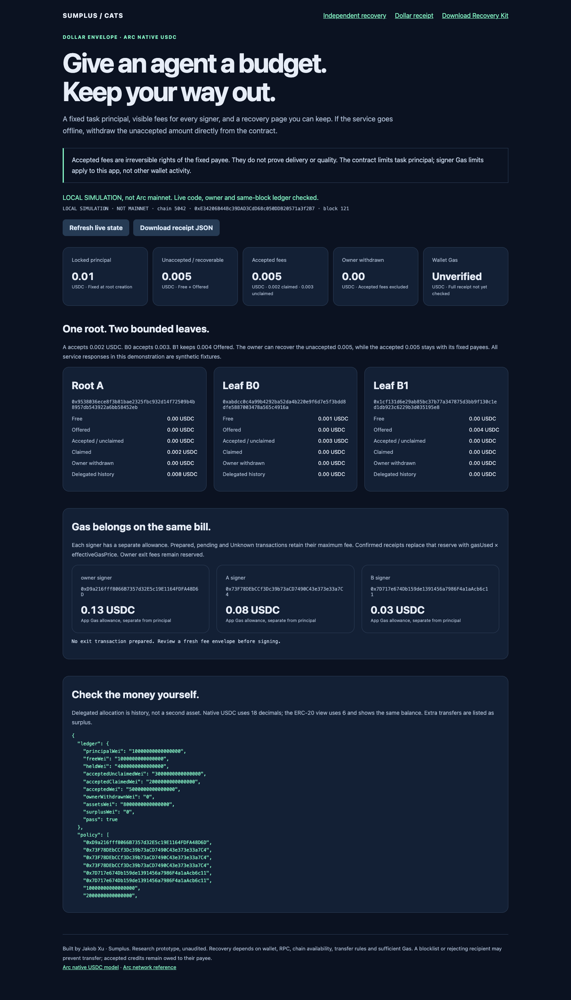

SUMPLUS / CATS
ARC NATIVE USDC · RESEARCH PROTOTYPE
Give an agent a budget.
Keep your way out.
A fixed task principal, visible network fees for every signer, and a recovery page you can keep. Withdraw unaccepted funds directly from the contract if the service stops.
One principal. An exact exit.
Fixed local demonstration amounts, not wallet balances. Accepted fees are irreversible and do not prove delivery or quality. Service responses are fixtures.
Gas belongs on the same bill.
Arc uses native USDC for principal and Gas. Each signer has a separate fee allowance. Pending and Unknown transactions retain their upper bound; actual receipts record gasUsed × effectiveGasPrice. Owner exit fees stay reserved.
The contract limits principal. Gas allowances apply to this app's signing flow, not arbitrary wallet activity. Native USDC uses 18 decimals; its 6-decimal ERC-20 view is the same balance.
A recovery page you can keep.
Stop the main service. Open the kit from another origin with fresh browser storage. Verify code, owner and live ledger. Close, release and withdraw 0.005. B's accepted 0.003 stays owed until its fixed payee independently claims it.
The local browser rehearsal completed four owner transactions and B's independent claim. Its signer was a controlled local EIP-1193 fixture, not an installed production extension. All 14 receipts and three signer balance deltas were checked against local RPC; an edited fee turned verification red.

Local rehearsal. Chain ID 5042 in Anvil is not mainnet evidence.